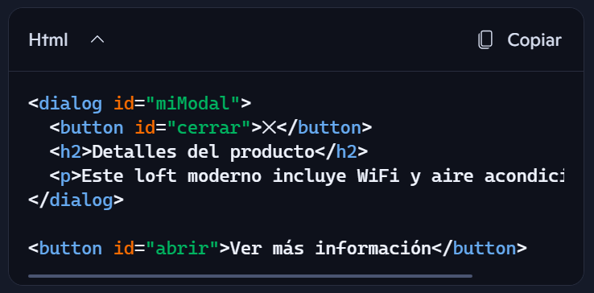

Loft en Ciudad del Carmen, México
Moderno Loft con WiFi y A/C •Ideal para descanso

Moderno Loft con WiFi y A/C •Ideal para descanso
Este es un ejemplo sencillo de cómo crear un modal moderno utilizando la etiqueta <dialog> de HTML5.
Al hacer clic en el botón "Ver más información", se abre el modal que contiene detalles adicionales sobre la propiedad.
El modal se puede cerrar haciendo clic en el botón de cierre (✕).
Ideal para entender cómo animar modales sin JavaScript, usando solo HTML y CSS3. Incluye pasos detallados desde la estructura hasta la animación.
Refuerza el uso de la etiqueta
Una guía completa que cubre desde la funcionalidad básica hasta cómo animar modales con CSS moderno. También incluye cómo cerrar el modal correctamente.
Un tutorial rápido y directo para crear modales funcionales en menos de 15 minutos. Ideal para principiantes.
Explica cómo hacer un modal estilo pop-up responsivo, con tips adicionales sobre buenas prácticas.
Si ya dominas lo básico, este video te lleva al siguiente nivel con trucos avanzados para sacarle el máximo provecho a <dialog></dialog>
<dialog>Esta etiqueta de HTML5 permite crear modales nativos sin necesidad de JavaScript complejo. Es semántica, accesible y muy poderosa si se combina con CSS moderno.

dialog {
width: 90%;
max-width: 400px;
padding: 2rem;
border: none;
border-radius: 10px;
box-shadow: 0 10px 30px rgba(0, 0, 0, 0.3);
background: white;
animation: fadeIn 0.3s ease-out;
position: relative;
}
dialog::backdrop {
background: rgba(0, 0, 0, 0.6);
backdrop-filter: blur(2px);
}
button#cerrar {
position: absolute;
top: 1rem;
right: 1rem;
background: transparent;
border: none;
font-size: 1.5rem;
cursor: pointer;
}
@keyframes fadeIn {
from {
opacity: 0;
transform: translateY(-20px);
}
to {
opacity: 1;
transform: translateY(0);
}
}
<dialog>, ya que puede interferir con su comportamiento nativo.<dialog>Aunque <dialog> tiene un comportamiento bastante único en HTML, hay varias pseudo-clases y pseudo-elementos que pueden complementar su uso para mejorar la experiencia visual y de interacción. Aquí los más útiles:
<dialog>Este es el más específico para <dialog>. Permite estilizar el fondo que aparece detrás del modal cuando está abierto. Ejemplo:
Esto es útil para crear un efecto de desenfoque o atenuación del fondo, mejorando la legibilidad del contenido del modal.
Cuando el modal está abierto, puedes usar :focus para aplicar estilos al diálogo cuando recibe el foco. Ejemplo:
Esto puede ser útil para mejorar la accesibilidad visual, indicando claramente que el modal está activo.
Detecta si el <dialog> está abierto. Muy útil para aplicar estilos condicionales.
Se activa cuando cualquier elemento dentro del <dialog> tiene el foco. Ideal para mostrar bordes o sombras cuando el usuario interactúa.
Si el navegador lo soporta, puedes usarlo para aplicar estilos al <dialog> que contenga ciertos elementos.
Aunque no son específicos de <dialog>, puedes usarlos para añadir decoraciones o iconos dentro del modal.
Usar animaciones suaves al abrir y cerrar el modal mejora la experiencia del usuario.
Puedes combinar pseudo-clases como :open con animaciones para lograr efectos suaves al mostrar el modal.